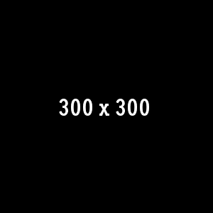
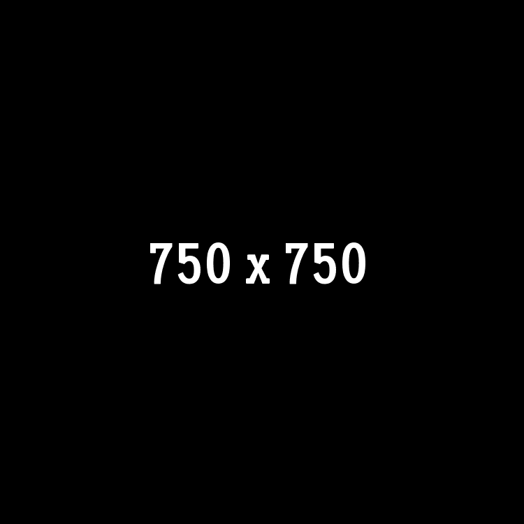
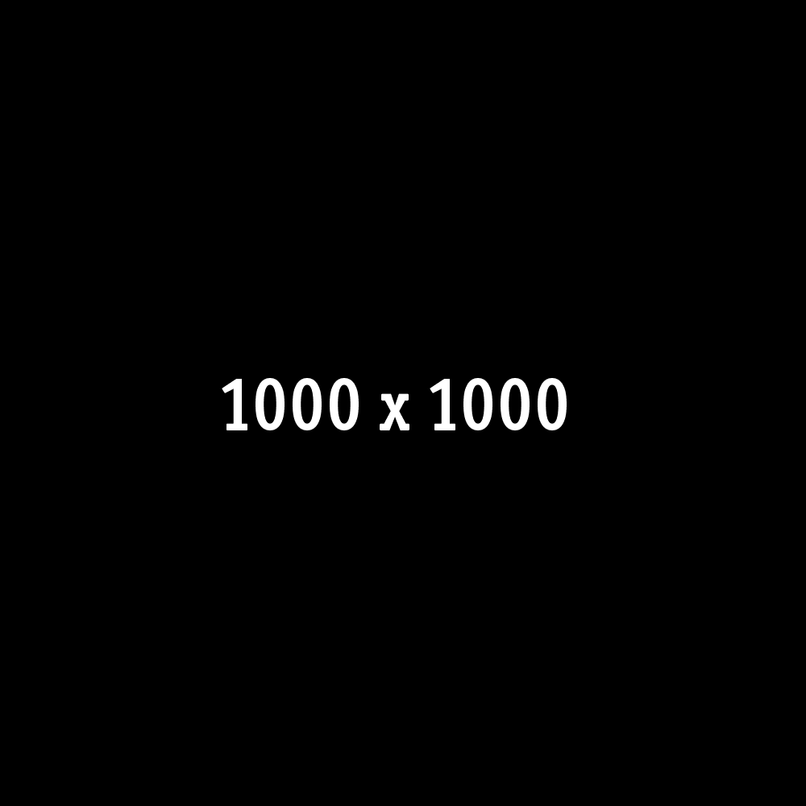
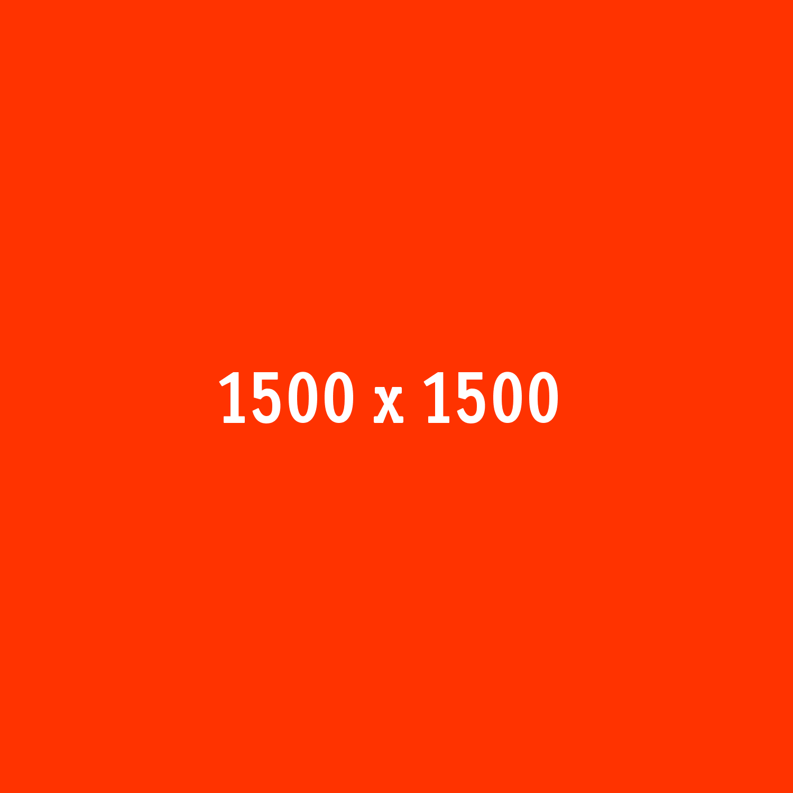
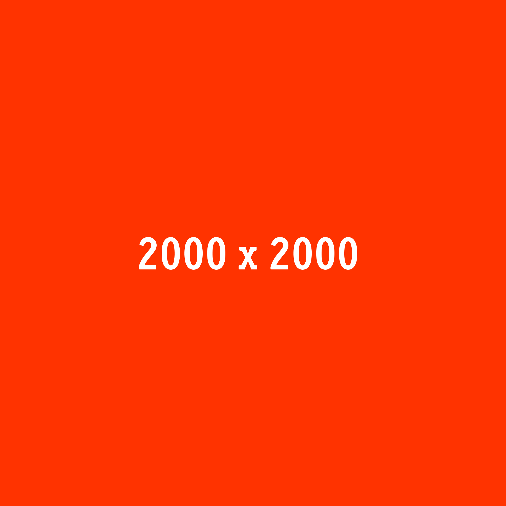

<!DOCTYPE html>
<html>
  <head>
    <title>rtp_imgQuery Tests</title>
    <link rel="stylesheet" href="qunit/qunit.css">
    <script type="text/javascript">
      var imgQry = {};
      imgQry.images = {};
      imgQry.ratios = {};
      imgQry.breakpoints = {};
      
    </script>
  </head>
  <body>
    <div id="qunit"></div>
    <div id="qunit-fixture"></div>
    <script src="qunit/qunit.js" type="text/javascript"></script>
    <script type="text/javascript">
      // Deliberatly without var so that breakpointsIn , imagesIn and ratiosIn are global properties
      // which can be deleted.
      imagesIn = {
          "1":    {
              "300" : '',
              "600" : '',
              "800" : '',
              "900" : ''
          },
          "1.5": {
              "300" : '',
              "600" : '',
              "800" : '',
              "900" : ''
          }
      },
      breakpointsIn = [300,600,800,900],
      ratiosIn = [1,1.5];
      
      // Device Pixel ratio
      imgQry.ratios = {};
      imgQry.ratio = 1;
      
      // Window width
      imgQry.width = 500;
      
    </script><script type="text/javascript">({write:function(i){"loading"===document.readyState&&document.write(i)},closest:function(i,t){"use strict";for(var r=i.length,o=0;r>o&&!(i[o]>=t);)o+=1;return o=o===r?r-1:o},sort:function(i,t){"use strict";return t>i?-1:t>i?1:0},imgQry:function(i,t,r,o){"use strict";t=t.sort(this.sort),o=o.sort(this.sort);var e=Array.prototype.slice.call(arguments,1);i.imgQry===void 0&&(i.imgQry={}),i.images===void 0&&(i.imgQry.images={}),i.ratios===void 0&&(i.imgQry.ratios={}),i.breakpoints===void 0&&(i.imgQry.breakpoints={}),i.imgQry.width===void 0&&(i.imgQry.width=window.innerWidth||document.documentElement.clientWidth||document.body.clientWidth||0),i.imgQry.ratio===void 0&&(i.imgQry.ratio=i.devicePixelRatio!==void 0?i.devicePixelRatio:1),i.imgQry.ratios[o]===void 0&&(i.imgQry.ratios[o]=o[this.closest(o,i.imgQry.ratio)]),i.imgQry.breakpoints[t]===void 0&&(i.imgQry.breakpoints[t]=t[this.closest(t,i.imgQry.width)]),i.imgQry.images[e]===void 0&&(i.imgQry.images[e]=r[i.imgQry.ratios[o]][i.imgQry.breakpoints[t]]),this.write(i.imgQry.images[e])}}).imgQry(this,breakpointsIn,imagesIn,ratiosIn);</script>
    <script type="text/javascript">
      var initialImageSelection = imgQry.images[[breakpointsIn , imagesIn, ratiosIn]],
          expectedInitialImage = imagesIn["1"]["600"];
          
      test('Initial image selection', function() {
          equal(initialImageSelection, expectedInitialImage, 'Expected first image to be second image for pixel ratio 1');
      });
      
    </script>
    <script type="text/javascript">
      var initialCache = imgQry.images;
      
      test('Cache contains first result.', function() {
          var count = 0,
              image;
          for (image in initialCache) {
              if (initialCache.hasOwnProperty(image)) {
                  count += 1;
              }
          }
          equal(count, 1, 'Expecting global cache to contain first result');
      });
      
    </script>
    <script type="text/javascript">
      delete(imagesIn);
      delete(breakpointsIn);
      delete(ratiosIn);
      
      var initialImagasIn = typeof(imagesIn),
          initialBreakpointsIn = typeof(breakpointsIn),
          initialRatiosIn = typeof(ratiosIn);
          
      test('Arguments have been cleared', function() {
          equal(initialImagasIn, 'undefined', 'Expecting imagesIn to be undefined.');
          equal(initialBreakpointsIn, 'undefined', 'Expecting breakpointsIn to be undefined.');
          equal(initialRatiosIn, 'undefined', 'Expecting ratiosIn to be undefined.');
      });
      
    </script>
    <script type="text/javascript">
      // breakpointsIn , imagesIn and ratiosIn are variables and not (as before) properties of the global object.
      var imagesIn = {
              "1":    {
                  "300" : '',
                  "600" : '',
                  "800" : '',
                  "900" : ''
              },
              "1.5": {
                  "300" : '',
                  "600" : '',
                  "800" : '',
                  "900" : ''
              }
      },
          breakpointsIn = [300,600,800,900],
          ratiosIn = [1,1.5];
          
          // Device Pixel ratio
          imgQry.ratios = {};
          imgQry.ratio = 1;
          
      // Window width
      imgQry.width = 500;
      
    </script><script type="text/javascript">({write:function(i){"loading"===document.readyState&&document.write(i)},closest:function(i,t){"use strict";for(var r=i.length,o=0;r>o&&!(i[o]>=t);)o+=1;return o=o===r?r-1:o},sort:function(i,t){"use strict";return t>i?-1:t>i?1:0},imgQry:function(i,t,r,o){"use strict";t=t.sort(this.sort),o=o.sort(this.sort);var e=Array.prototype.slice.call(arguments,1);i.imgQry===void 0&&(i.imgQry={}),i.images===void 0&&(i.imgQry.images={}),i.ratios===void 0&&(i.imgQry.ratios={}),i.breakpoints===void 0&&(i.imgQry.breakpoints={}),i.imgQry.width===void 0&&(i.imgQry.width=window.innerWidth||document.documentElement.clientWidth||document.body.clientWidth||0),i.imgQry.ratio===void 0&&(i.imgQry.ratio=i.devicePixelRatio!==void 0?i.devicePixelRatio:1),i.imgQry.ratios[o]===void 0&&(i.imgQry.ratios[o]=o[this.closest(o,i.imgQry.ratio)]),i.imgQry.breakpoints[t]===void 0&&(i.imgQry.breakpoints[t]=t[this.closest(t,i.imgQry.width)]),i.imgQry.images[e]===void 0&&(i.imgQry.images[e]=r[i.imgQry.ratios[o]][i.imgQry.breakpoints[t]]),this.write(i.imgQry.images[e])}}).imgQry(this,breakpointsIn,imagesIn,ratiosIn);</script>
    <script type="text/javascript">
      var secondImageSelection = imgQry.images[[breakpointsIn , imagesIn, ratiosIn]],
          expectedSecondImage = imagesIn["1"]["600"];
          
      test('Cached image selection', function() {
          equal(secondImageSelection, initialImageSelection, 'Expected second image to be the same as first');
          equal(secondImageSelection, expectedSecondImage, 'Expected second image to be second image for pixel ratio 1');
      });
      
    </script>
    <script type="text/javascript">
      var finalCache = imgQry.images;
      
      test('Cache contains one result', function() {
      
          var count = 0,
              image;
              
          for (image in finalCache) {
              if (imgQry.images.hasOwnProperty(image)) {
                  count += 1;
              }
          }
          
          equal(count, 1, 'Expected global cache to contain only one result');
      });
    </script>
  </body>
</html>